Математика:Абс
Этот узел представляет собой математическую операцию (Абсолютную), которая преобразует входное число из отрицательного в положительное.
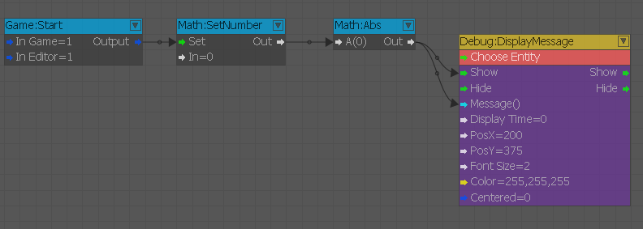
В приведенном выше примере у нас есть отрицательное число -14,6, и после того, как оно прошло через узел «Math:Abs», результат (положительное число) выводится на интерфейс.
Описание порта
Ввод | Описание |
|---|---|
Плавать "А" | Входное число, которое будет рассчитано с помощью функции Abs. |
Выход | Описание |
Плавать "выход" | Выводит результат |
Математика:Добавить
Это простая операция добавления входа B к входу A с последующим выводом результата. Вы можете напрямую задать число в узле для A или B или ввести значение откуда-то еще. (Оба показаны на картинке).
В следующем примере у нас есть блок-схема для вывода результата «Math:Add» в HUD.
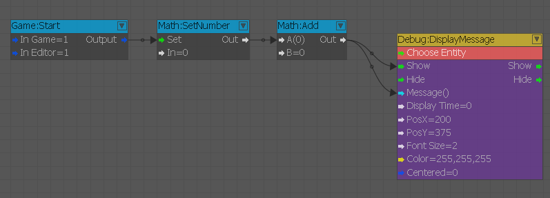
Ввод | Описание |
|---|---|
Плавать "А" | Первое число, добавляемое к |
Плавать "Б" | Второе число, чтобы добавить первое |
Выход | Описание |
Плавать "выход" | Выводит результат |
Математика:AnglesToDir
Используется для преобразования входного угла в направление единичного вектора.
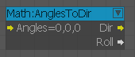
Входы
| Порт | Тип | Описание |
|---|---|---|
| Углы | Век3 | Входной угол |
Выходы
| Порт | Тип | Описание |
|---|---|---|
| Реж. | Век3 | Единичный вектор направления |
| Ролл | Плавать | Выход рулона |
Математика:ArcCosinus
Используется для вычисления обратного косинуса входных данных.
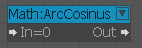
Входы
| Порт | Тип | Описание |
|---|---|---|
| В | Плавать | Входной угол |
Выходы
| Порт | Тип | Описание |
|---|---|---|
| Выход | Плавать | Выходной угол |
Математика:ArcSinus
Используется для вычисления обратного синуса входного сигнала.
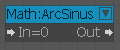
Входы
| Порт | Тип | Описание |
|---|---|---|
| В | Плавать | Входной угол |
Выходы
| Порт | Тип | Описание |
|---|---|---|
| Выход | Плавать | Обратный синус (Арксинус) входа |
Математика:ArcTangens
Используется для вычисления обратного тангенса входных данных.
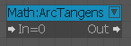
Входы
| Порт | Тип | Описание |
|---|---|---|
| В | Плавать | Входной угол |
Выходы
| Порт | Тип | Описание |
|---|---|---|
| Выход | Плавать | Обратный тангенс (ArcTangens) входного сигнала |
Математика:Auto3DNoise
Генерирует непрерывный 3D-шум, плавно интерполируя ряд рандомизированных 3D-координат (значения Vec3 или X,Y,Z). Выходные значения рандомизируются на основе входного начального значения Vec3 и вывода в виде значения Vec3.
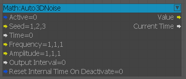
Как видно на эталонном изображении ниже, Математика:Auto3DNoise определяет, где именно (по осям X, Y и Z) должны генерироваться плавающие точки и насколько высокими/нижними должны быть значения кривой. Эти значения основаны на Частота и Амплитуда значения соответственно.
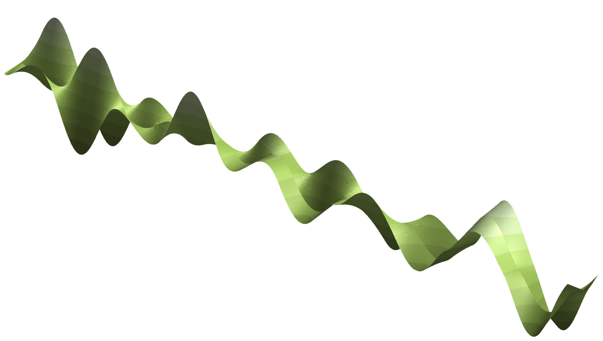
Эталонное изображение 3D-шума
Ввод | Тип | Описание |
|---|---|---|
Активный | логическое значение | Если это правда, узел будет постоянно выводить значения через определенные промежутки времени. |
Семена | Век3 | Начальное значение Vec3, на основе которого будет происходить рандомизация, позволяющая устанавливать каждую ось независимо. |
Время | Плавать | Указывает временной интервал, в течение которого необходимо производить выборку шума. Это также начальный период выборки, если активный порт равен FALSE. |
Частота | Век3 | Масштабный коэффициент для входного значения; определяет, как часто будут генерироваться рандомизированные значения с плавающей запятой. Более низкая Частота сузит диапазон значений, из которых может быть сгенерировано следующее рандомизированное значение, тогда как более высокая Частота расширит этот диапазон. |
Амплитуда | Век3 | Масштабный коэффициент для значений шума; определяет, насколько высокими/низкими будут рандомизированные значения с плавающей запятой. Более низкая амплитуда сузит диапазон значения, из которого генерируется следующее рандомизированное значение, а более высокая амплитуда расширит этот диапазон. |
Выходной интервал | Плавать | Как часто значение выводится, если оно активно (в секундах). |
Внутреннее время отдыха при деактивации | логическое значение | Если узел деактивирован (активным портом), внутреннее время сбрасывается на 0,0f. |
Выход | Тип | Описание |
Значение | Век3 | Рандомизированные значения Vec3. |
Текущее время | Плавать | Значение времени с плавающей запятой. |
Математика:AutoNoise1D
Генерирует непрерывный шум как значения с плавающей запятой, плавно интерполяция между серией рандомизированных значения с плавающей запятой на основе входного начального значения.
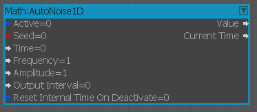
Ввод | Тип | Описание |
|---|---|---|
Активный | логическое значение | Если это правда, узел будет постоянно выводить значения через определенный интервал. |
Семена | Int | Целочисленное начальное значение, на основе которого будет происходить рандомизация, позволяющая устанавливать каждую ось независимо. |
Время | Плавать | Время выборки шума. Это также начальный период выборки, если активный порт равен FALSE. |
Частота | Плавать | Масштабный коэффициент для входного значения; определяет, как часто будут генерироваться рандомизированные значения с плавающей запятой. Более низкая Частота сузит диапазон значений, из которых может быть сгенерировано следующее рандомизированное значение, тогда как более высокая Частота расширит этот диапазон. |
Амплитуда | Плавать | Масштабный коэффициент для значений шума; определяет, насколько высокими/низкими будут рандомизированные значения с плавающей запятой. Более низкая амплитуда сузит диапазон значения, из которого генерируется следующее рандомизированное значение, а более высокая амплитуда расширит этот диапазон. |
Выходной интервал | Плавать | Как часто значение выводится, если оно активно (в секундах). |
Внутреннее время отдыха при деактивации | логическое значение | Если узел деактивирован (с активным портом), внутреннее время сбрасывается на 0,0f. |
Выход | Тип | Описание |
Значение | Плавать | Случайное значение с плавающей запятой. |
Текущее время | Плавать | Значение времени с плавающей запятой. |
Математика:BooleanFrom
Этот узел разделит логический ввод на вывод «истина/ложь» (1/0).
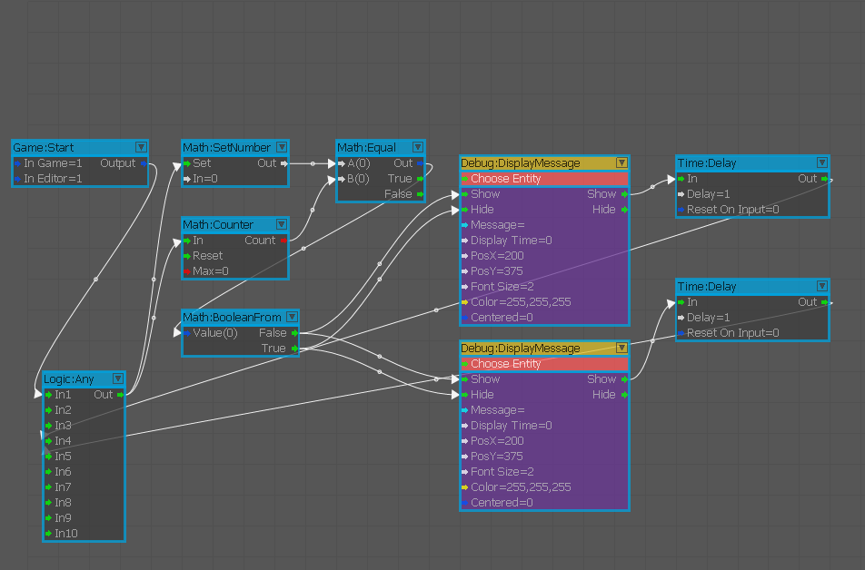
В приведенном выше примере блок-граф переключает входные данные «Math:FromBoolean» с true на false.
Основная часть этого примера — это раздел, начиная с «Math:Equal». OUT Math:Equal — это логический вывод, который Math:FromBoolean считывает, а затем пересылает сигнал на узлы сообщений HUD.
Затем происходит циклическое переключение числа от 1 до 0 (истина/ложь) через «Math:Counter». В результате он будет циклически переключаться между двумя сообщениями HUD каждую секунду.
Ввод | Описание |
|---|---|
логическое значение «Ценность» | |
Выход | Описание |
Любой «Ложь» | Выводит результат, если False (0) |
Любой "Правда" | Выводит результат, если True (1) |
Математика:BooleanTo
Этот узел будет принимать входные данные «истина» или «ложь» и преобразовывать их в логический вывод.
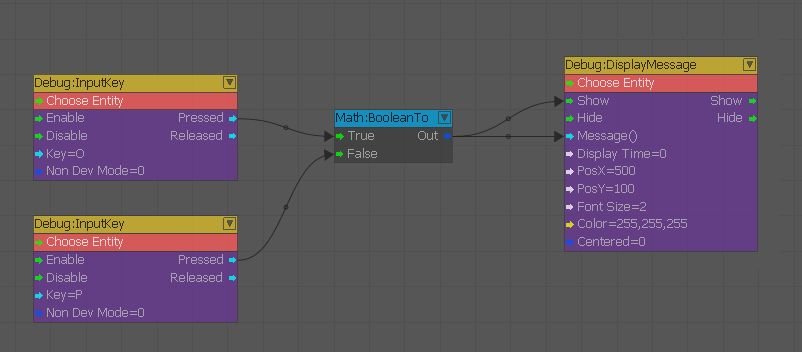
В приведенном выше примере при нажатии клавиши «O» для запуска истинного ввода Math:ToBoolean выводит 1 в HUD. А затем, нажав клавишу «P», чтобы вызвать ложный ввод, Math:ToBoolean преобразует сигнал для вывода 0 в HUD.
Ввод | Описание |
|---|---|
ANY "правда" | Входной сигнал, подлежащий преобразованию |
ANY "ложь" | Входной сигнал, подлежащий преобразованию |
Выход | Описание |
логическое значение "выход" | Выводит результат в логическом формате (0 или 1). |
Математика:Рассчитать
Этот узел представляет собой универсальный математический узел «все в одном». В поле операции слева вы можете выбрать «Сложить», «Вычесть», «Умножить» или «Разделить».
Затем он выполнит выбранную операцию над A и B и выведет результат.
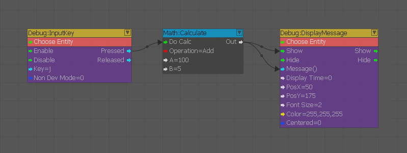
В приведенном выше примере при нажатии клавиши «J» узел Math:Calculate выполнит выбранную операцию «Добавить» для A и B.
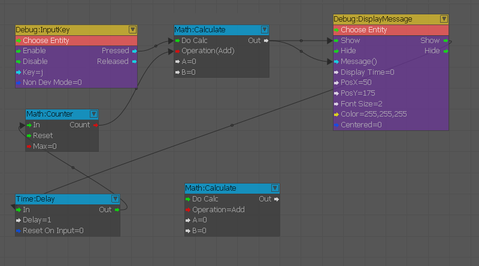
В этом примере при нажатии клавиши «J» узел Math:Calculate выполнит первую операцию (Добавить), а затем, после того как он отобразит ее на HUD, он перейдет к следующей математической операции после задержки в 1 секунду и повторного нажатия «J».
Сначала он выполнит операции «Сложение», «Разделение», «Умножение», а затем «Вычитание».
Ввод | Описание |
|---|---|
Любой "DoCalc" | Выполняет операцию |
Int «Операция» | Раскрывающийся список для выбора операции для выполнения. Выберите «Сложить», «Разделить», «Умножить» или «Вычесть». |
Плавать "А" | Первое число, используемое в расчете |
Плавать "Б" | Второе число для работы с первым |
Выход | Описание |
Плавать "выход" | Выводит результат |
Математика:Потолок
Используется для вывода максимального значения входа.
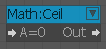
Входы
| Порт | Тип | Описание |
|---|---|---|
| В | Плавать | Ввод |
Выходы
| Порт | Тип | Описание |
|---|---|---|
| Выход | Плавать | Входное значение потолка |
Математика: Зажим
Этот узел возьмет число float и зафиксирует его в указанном диапазоне, установленном в его параметрах.
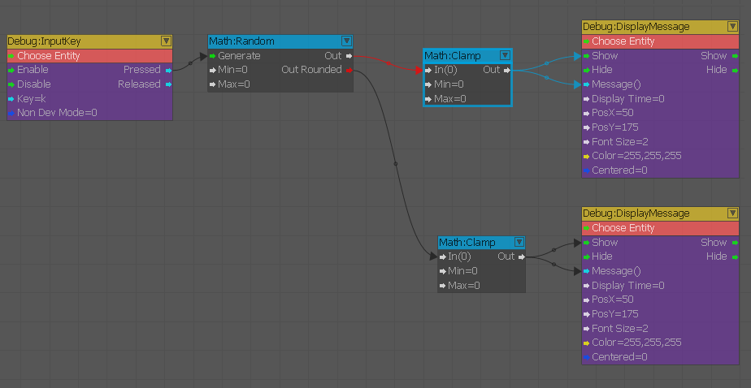
На рисунке выше при нажатии клавиши «K» «Math:Random» генерирует число от 0 до 100. Затем сигнал передается на два узла «Math:Clamp», где они настроены на вывод только числа от 0 до 50.
Поэтому, если число попадает в диапазон 0 -> 50, оно пройдет как обычно. Но если число превышает 50 (максимальный набор), оно будет ограничено до 50.
И наоборот, если бы минимум был установлен на уровне 20, любое число ниже минимума было бы увеличено до 20.
Ввод | Описание |
|---|---|
Плавать "в" | Входной номер, который необходимо зафиксировать |
Плавать "мин" | Минимальный диапазон зажима |
Плавать "макс" | Максимальный диапазон зажима |
Выход | Описание |
Плавать "выход" | Выводит результат |
Математика:Косинус
Этот узел будет принимать входные данные угла в градусах и выводить результат в радианах.
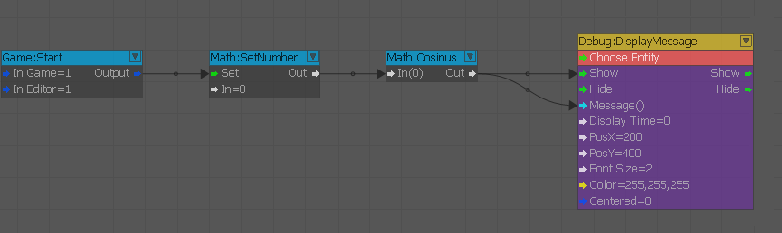
В приведенном выше примере мы используем «Math:SetNumber» для ввода угла (56 градусов), который проходит через «Math:Cosinus» для отображения результата в HUD.
(Ответ = 0,559193 радиан)
Ввод | Описание |
|---|---|
Плавать "в" | Входной угол в градусах, который будет рассчитан с помощью функции косинуса. |
Выход | Описание |
Плавать "выход" | Выводит результат в радианах |
Математика:CosinusInverse
Этот узел будет принимать входные данные в радианах и выводить результат в градусах.
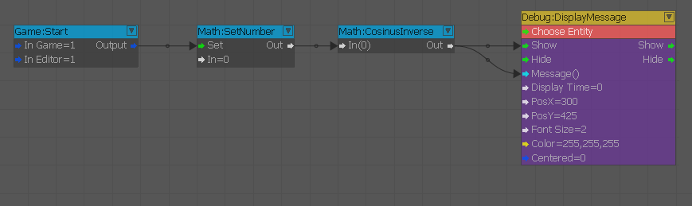
В приведенном выше примере мы используем «Math:SetNumber» для ввода радиана, который проходит через «Math:CosinusInverse» для отображения результата в HUD.
(Ответ = 56 градусов)
Ввод | Описание |
|---|---|
Плавать "в" | Входные данные в радианах, которые будут рассчитаны с помощью функции CosinusInverse. |
Выход | Описание |
Плавать "выход" | Выводит результат в градусах |
Математика:Счетчик
Каждый раз, когда этот узел получает входные данные, он увеличивает число на 1, а затем пересылает его на выход.
Когда внутренний номер достигнет указанного числа, установленного в опции «MAX», счетчик сбросится обратно на ноль.
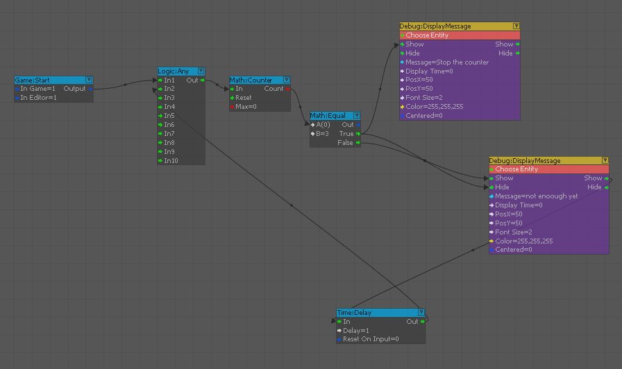
Счетчик по времени
Когда сигнал проходит через блок-граф, он увеличивает счетчик на 1, затем достигает первой отладки: DisplayMessage, а затем подает сигнал обратно в логику после задержки в 1 секунду.
Затем все повторяется снова, каждый раз увеличивая счетчик на 1. Как только счетчик станет равным 3 (указанным в Math:Equal), первое сообщение HUD будет скрыто, а затем будет показано второе.
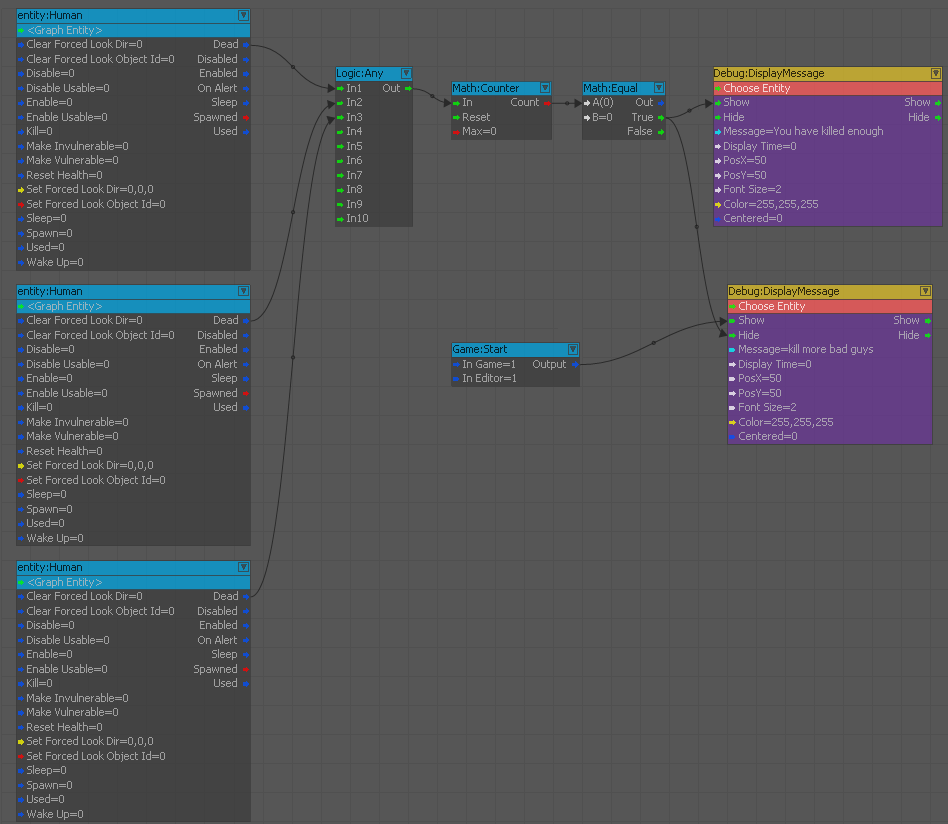
Счетчик трупов
В этом примере, когда любой из людей AI убит, он пересылает сигнал через «Logic:Any» на «Math:Counter». Это будет увеличивать счетчик на 1 каждый раз, когда он получает сигнал. Когда все три пехотинца мертвы, «Math:Equal» становится истинным и сообщение HUD обновляется.
Примечание. В обоих примерах значение MAX в «Math:Counter» установлено выше, чем в «Math:Equal». Это связано с тем, что если счетчик достигнет установленного значения MAX, он будет сброшен на ноль, и «Математика: Равно» никогда не станет истинным.
Ввод | Описание |
|---|---|
Любой "в" | |
Любой "сброс" | Чтобы принудительно обнулить счетчик вместо того, чтобы позволить это сделать значению MAX |
Целое число "макс" | При достижении MAX счетчик обнуляется. |
Выход | Описание |
Целое число "считать" | Выводит результат |
Математика:DirToAngles
Используется для преобразования направления входного вектора в угол.
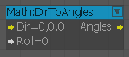
Входы
| Порт | Тип | Описание |
|---|---|---|
| Реж. | Век3 | Векторное направление |
| Ролл | Плавать | Ввод рулона |
Выходы
| Порт | Тип | Описание |
|---|---|---|
| Углы | Век3 | Преобразует направление в угол в градусах. |
Математика:Див
Это простая операция деления входных данных A на входные B с последующим выводом результата. Вы можете напрямую задать число в узле для A или B или ввести значение откуда-то еще. (Оба показаны на картинке).
В следующем примере у нас есть блок-схема для вывода результата «Math:Div» в HUD.
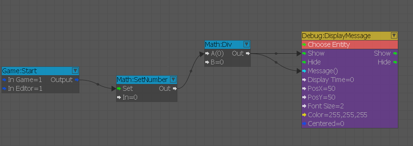
Ввод | Описание |
|---|---|
Плавать "А" | Первое число, которое нужно разделить |
Плавать "Б" | Второе число делает деление |
Выход | Описание |
Плавать "выход" | Выводит результат |
Математика:Равно
Узел «Math:Equal» проверяет, равен ли вход B входу A. Затем он выводит ответ в логической форме.
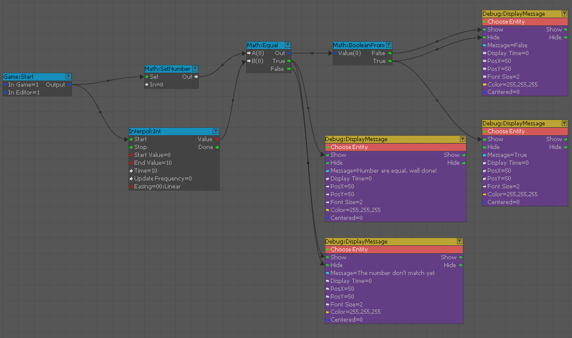
В приведенном выше примере мы устанавливаем число 10 (A), а также интерполируем другое число от 0 до 10 (B). Оба они передаются в узел Math:Equal.
При запуске они не равны, поэтому сигнал передается на ложный порт. Пока (B) не достигнет 10, тогда (B) будет равно (A) и он сможет передать сигнал на истинный выходной порт.
На узле Math:Equal также имеется порт (OUT). Это логический вывод. В приведенном выше примере OUT действует так же, как порты true/false, но объединяется в один выход.
Это передается в узел «Math:FromBoolean», который затем разделяет его на истинный/ложный вывод.
Ввод | Описание |
|---|---|
Плавать "А" | Первое число для проверки |
Плавать "Б" | Второе число для проверки против первого |
Выход | Описание |
логическое значение "Выход" | Выводит результат в виде логического значения |
Любой "Правда" | Сигнал поступает на этот выход только тогда, когда A и B совпадают. |
Любой «Ложь» | Сигнал поступает на этот выход, если A и B не совпадают. |
Математика:EqualCheck
[Выход] истинно, когда [A]==[B], в противном случае — ложно. Проверка выполняется только при срабатывании входа «Проверка».
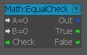
Математика: Этаж
Используется для вывода нижнего уровня ввода.
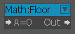
Входы
| Порт | Тип | Описание |
|---|---|---|
| А | Плавать | Ввод |
Выходы
| Порт | Тип | Описание |
|---|---|---|
| Выход | Плавать | Напольный вход |
Математика:Геометрия
SwitchCoordinateSpace
Используется для преобразования между пространствами (системами координат).
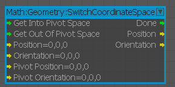
TransformSpace
Выполняет преобразование внутри пространства точки поворота.
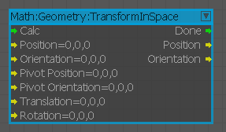
Математика:InRange
Используется для проверки того, находится ли вход в диапазоне минимального и максимального значений.
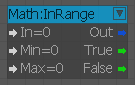
Входы
| Порт | Тип | Описание |
|---|---|---|
| В | Плавать | Ввод |
| Мин | Плавать | Минимальное значение диапазона |
| Макс | Плавать | максимальное значение диапазона |
Выходы
| Порт | Тип | Описание |
|---|---|---|
| Выход | логическое значение | Истинно, если ввод находится в пределах диапазона |
| Правда | Любой | Срабатывает, если входной сигнал находится в пределах диапазона |
| Ложь | Любой | Срабатывает, если ввод находится за пределами диапазона |
Математика:Меньше
Этот узел представляет собой простой расчет: (A) меньше, чем (B)?
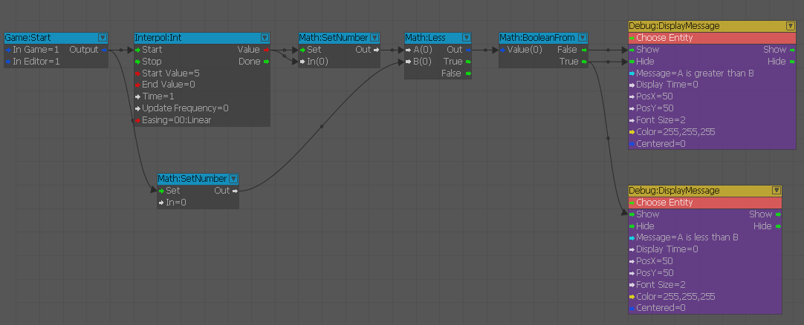
В приведенном выше примере в начале значение (A) выше значения (B). По мере того как секунды отсчитываются через «Interpol:Int», как только (B) становится равным нулю, «Math:Less» становится истинным, и сообщение HUD обновляется.
Ввод | Описание |
|---|---|
Плавать "А" | Число, проводящее тестирование |
Плавать "Б" | Число для проверки |
Выход | Описание |
логическое значение "Выход" | |
Любой «Ложь» | Выводит результат, если False (0) |
Любой "Правда" | Выводит результат, если True (1) |
Математика:LessCheck
[Выход] истинно, когда [A] < [B], и ложно в противном случае. Проверка выполняется только при срабатывании входа «Проверка».
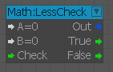
Математика:Мод
Используется для расчета модуля двух входов.
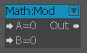
Входы
| Порт | Тип | Описание |
|---|---|---|
| А | Плавать | Первый операнд |
| Б | Плавать | Второй операнд |
Выходы
| Порт | Тип | Описание |
|---|---|---|
| Выход | Плавать | Модуль двух входов |
Математика:Мул
Это простая операция умножения входных данных A на входные B с последующим выводом результата. Вы можете напрямую установить число в узле для A или B или ввести значение откуда-то еще (оба показаны на рисунке).
В следующем примере у нас есть блок-схема для вывода результата «Math:Mul» в HUD.
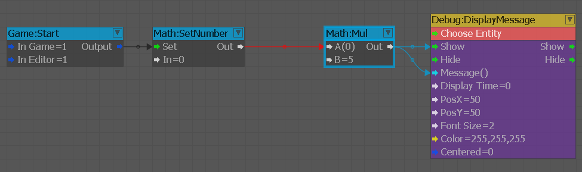
Ввод | Описание |
|---|---|
Плавать "А" | Первое число, которое нужно умножить |
Плавать "Б" | Второе число, умноженное на первое |
Выход | Описание |
Плавать "выход" | Выводит результат |
Математика:Noise1D
Используется для умножения скалярного входного сигнала на частоту и амплитуду.
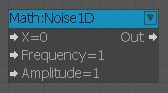
Входы
| Порт | Тип | Описание |
|---|---|---|
| Х | Плавать | Скалярное входное значение для выборки шума |
| Частота | Плавать | Частота |
| Амплитуда | Плавать | Амплитуда |
Выходы
| Порт | Тип | Описание |
|---|---|---|
| Выход | Плавать | Умножение X на значения частоты и амплитуды |
Математика:Noise3D
Используется для умножения входного вектора на частоту и амплитуду.
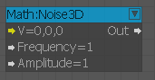
Входы
| Порт | Тип | Описание |
|---|---|---|
| В | Век3 | Входное векторное значение для выборки шума |
| Частота | Плавать | Частота |
| Амплитуда | Плавать | Амплитуда |
Выходы
| Порт | Тип | Описание |
|---|---|---|
| Выход | Плавать | Умножение V на значения частоты и амплитуды |
Математика:PortCounter
Используется для подсчета количества активированных входов.
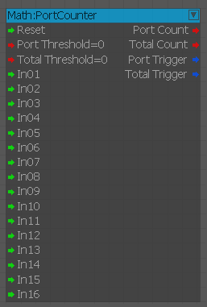
Входы
| Порт | Тип | Описание |
|---|---|---|
| Сброс | Любой | Сбрасывает PortCount и TotalCount |
| PortThreshold | Целое число | PortCount пороговое значение |
| TotalThreshold | Целое число | TotalCount пороговое значение |
| В00 - В15 | Любой | Входы |
Выходы
| Порт | Тип | Описание |
|---|---|---|
| PortCount | Целое число | Количество установленных портов |
| TotalCount | Целое число | Сумма всех раз, когда любой из входных портов был установлен |
| PortTrigger | логическое значение | Срабатывает, когда PortCount достигает PortThreshold |
| TotalTrigger | логическое значение | Срабатывает, когда TotalCount достигает TotalThreshold |
Математика: Мощность
Когда вы используете этот узел в потоковом графе, он рассчитает базу по числу, заданному во входе мощности.
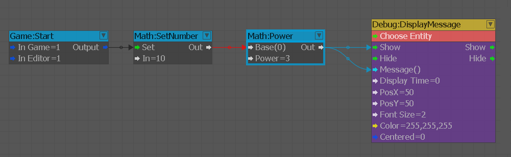
В приведенном выше примере мы устанавливаем число по основанию равное 10, затем передаем его через узел «Math:Power» со степенью, установленной на 3. Это выведет результат (1000) в HUD.
Ввод | Описание |
|---|---|
Плавать "база" | Входное число для расчета |
Плавать "сила" | Значение мощности для расчета на основе |
Выход | Описание |
Плавать "выход" | Выводит результат |
Математика: Случайная
Этот узел после получения входных данных генерирует случайное число между указанными вами настройками MIN и MAX. Он имеет 2 выходных порта: выход и outRounded.
В зависимости от того, какой из них вы выберете, он выведет число в виде float или целого числа.
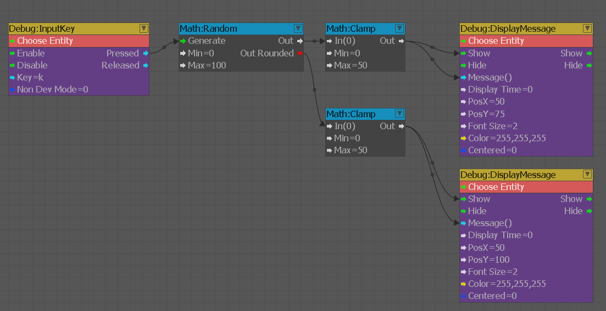
В приведенном выше примере при нажатии клавиши «K» узел «Math:Random» генерирует число от 0 до 100 (игнорируя зажимы, два сообщения hud выведут число на экран).
Вверху будет отображаться float, а внизу — то же сгенерированное число, но округленное в большую или меньшую сторону как целое число.
0,0 -> 0,49 = округление в меньшую сторону
0,5 -> 1,0 = округляется в большую сторону
Ввод | Описание |
|---|---|
Любой«Создать» | При активации будет сгенерировано случайное число. |
Плавать "мин" | Указано минимальное количество диапазона |
Плавать "макс" | Максимальное количество, указанное в диапазоне |
Выход | Описание |
Плавать "выход" | Выводит результат как число с плавающей запятой |
Целое число "outRounded" | Выводит результат как целое число |
Математика:Взаимный
Этот узел будет вычислять обратную величину входного числа. (В степени -1).
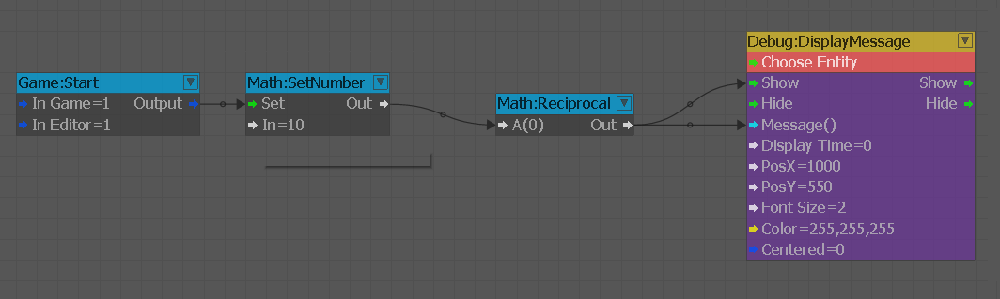
В приведенном выше примере мы устанавливаем входное число 10 и передаем его через «Math:reciprocal», который затем выводит результат (0,1) в HUD.
Ввод | Описание |
|---|---|
Плавать "А" | Входные данные для расчета |
Выход | Описание |
Плавать "выход" | Выводит результат |
Математика:Остаток
Этот узел рассчитает количество, оставшееся после разделения двух входных данных друг на друга.
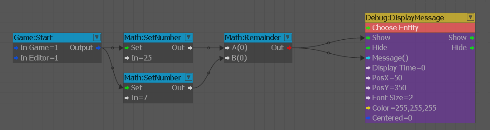
В приведенном выше примере у нас есть 2 целых числа, поступающих на входы 25 и 7. Итак, 25/7 = 3, остаток 4.
Ввод | Описание |
|---|---|
Плавать "А" | Первое число, по которому производятся вычисления |
Плавать "Б" | Второе число, которое нужно разделить на первое |
Выход | Описание |
Целое число "выход" | Выводит результат остатка |
Математика:Круглый
Этот узел будет округлять входное число float в большую или меньшую сторону в зависимости от значения после десятичной точки.
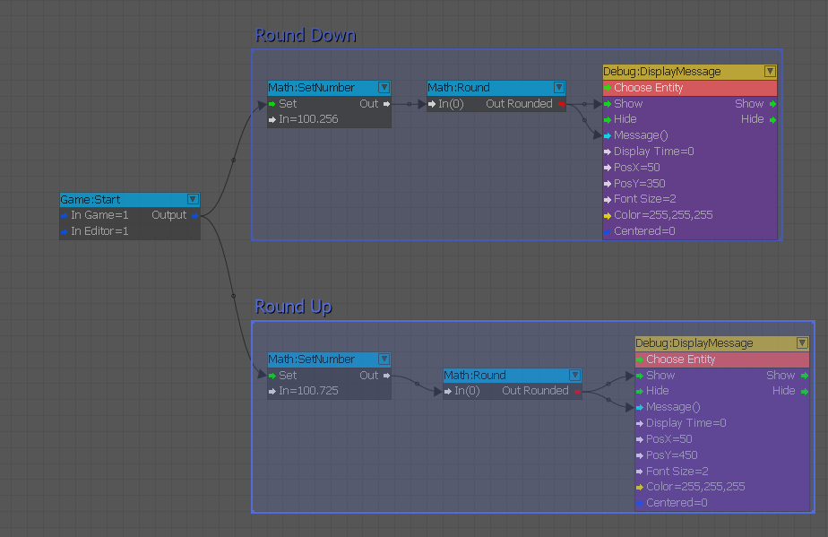
В приведенном выше примере мы округляем верхний путь и округляем нижний путь. Система, которой он следует,...
0,0 -> 0,49 = округление в меньшую сторону
0,5 -> 1,0 = округляется в большую сторону
Ввод | Описание |
|---|---|
Плавать "В" | Входное число для расчета |
Выход | Описание |
Целое число "outRounded" | Выводит результат либо вверх, либо вниз |
Математика:SetColor
Этот узел устанавливает цвет в формате RGB.
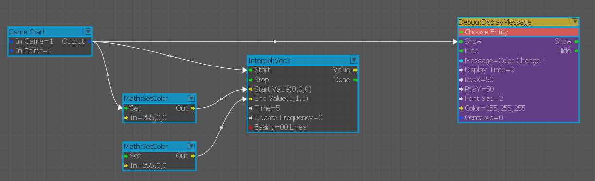
В приведенном выше примере у нас есть сообщение «Изменение цвета!» отображается на HUD.
Мы используем узел «Interpol:Vec3», чтобы изменить цвет текста с красного (255,0,0) в начале на синий (0,0,255) в течение 5 секунд.
Ввод | Описание |
|---|---|
Любой "набор" | Активирует узел |
Век3 "в" | Установите цвет в формате RGB. (При желании вы можете использовать палитру цветов) |
Выход | Описание |
Век3 "выход" | Выводит результат |
Математика:SetInteger
Используется для отправки целочисленного входного значения на выход при получении события на порте Set.
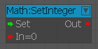
Математика:SetNumber
Этот узел является базовой функцией для указания числа, указанного в блок-графе. Обычно он используется в сочетании с другими узлами.
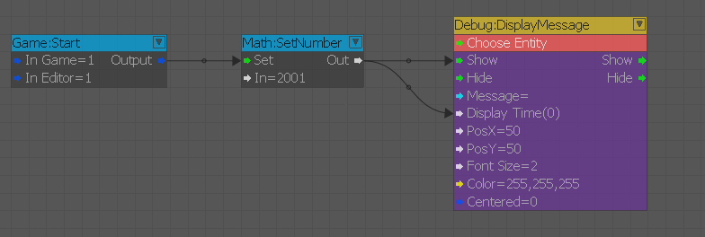
В приведенном выше примере мы установили число 2001 для отображения на HUD.
Ввод | Описание |
|---|---|
Любой "набор" | Активирует узел |
Плавать "в" | Введите номер, который вы хотите использовать |
Выход | Описание |
Плавать "выход" | Выводит результат |
Математика:SinCos
Этот узел представляет собой комбинацию узлов «Math:Sinus» и «Math:Cosinus». Он будет принимать входные данные в градусах, а затем выводить их на два разных порта в формате синуса и косинуса.
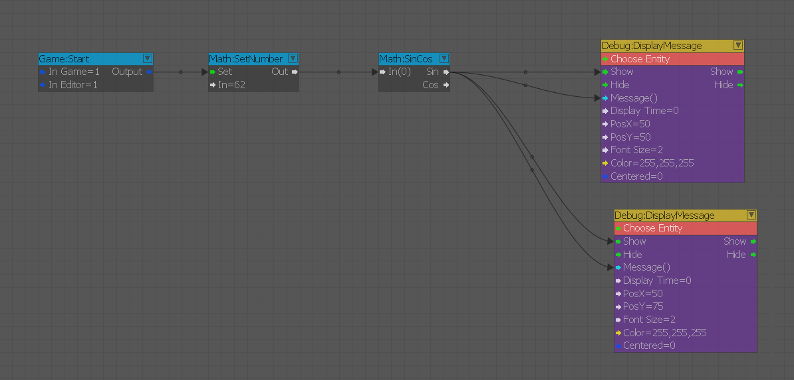
В приведенном выше примере входные данные в градусах (62) подаются в узел Math:SinCos, а затем выводятся результаты на отдельные порты sin и cos, которые передаются в другой блок сообщений на HUD.
(Ответ = sin = -0,739181, cos = 0,673507)
Ввод | Описание |
|---|---|
Плавать "в" | Входной угол в градусах, который будет рассчитан функцией SinCos. |
Выход | Описание |
Плавать "грех" | Выводит результат в радианах (синусах) |
Плавать "потому что" | Выводит результат в радианах (косинусах) |
Математика:Синус
Этот узел будет принимать входные данные угла в градусах и выводить результат в радианах.
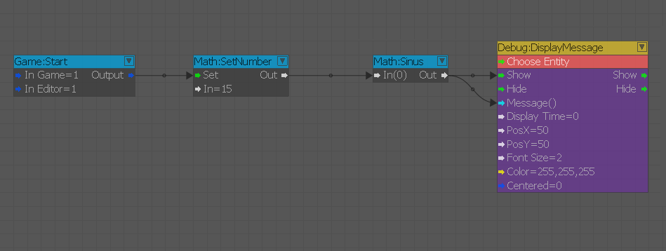
В приведенном выше примере мы устанавливаем градусы на 45 и передаем их через узел «Math:Sinus», чтобы вывести результат в радианах в HUD.
(Ответ = 0,707107)
Описание порта
Ввод | Описание |
|---|---|
Плавать "в" | Входной угол в градусах, который будет рассчитан с помощью функции синуса. |
Выход | Описание |
Плавать "выход" | Выводит результат в радианах |
Математика:SinusInverse
Этот узел будет принимать входные данные в радианах и конвертировать их в градусы.
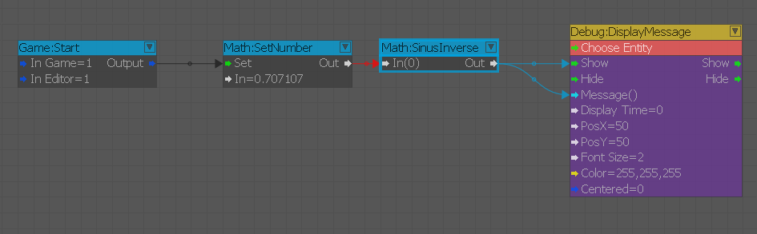
В приведенном выше примере мы установили входные данные в радианах через «Math:SetNumber» и передали их через узел «Math:SinusInverse», чтобы получить результат в HUD в градусах.
(Ответ = 45 градусов)
Ввод | Описание |
|---|---|
Плавать "в" | Входной угол в радианах, который будет рассчитан функцией SinusInverse. |
Выход | Описание |
Плавать "выход" | Выводит результат в градусах |
Математика:Sqrt
Этот узел даст вам квадратный корень из введенного числа.
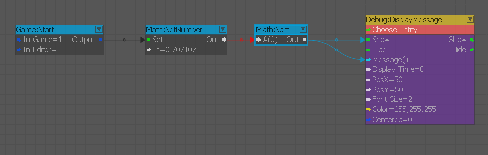
В приведенном выше примере мы указываем число с узлом «Math:SetNumber», которое затем проходит через узел «Math:Sqrt», который отображает результат на HUD.
(Ответ = 34.741905)
Ввод | Описание |
|---|---|
Плавать "А" | Входное число, которое будет рассчитано с помощью функции квадратного корня. |
Выход | Описание |
Плавать "выход" | Выводит результат |
Математика:Подробнее
Это простая операция вычитания входа B из входа A с последующим выводом результата. Вы можете напрямую задать число в узле для A или B или ввести значение откуда-то еще (оба показаны на рисунке).
В следующем примере мы создали блок-схему, выводящую результат «Math:Sub» в HUD.
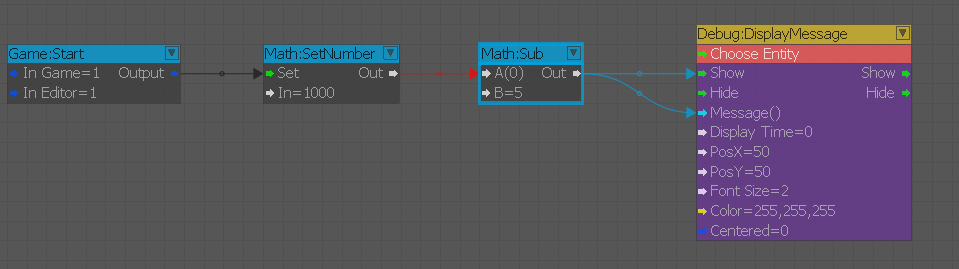
Ввод | Описание |
|---|---|
Плавать "А" | Первое число, которое нужно вычесть |
Плавать "Б" | Второе число, которое нужно вычесть из первого |
Выход | Описание |
Плавать "выход" | Выводит результат |
Математика: Тангенс
Этот узел будет принимать входные данные в градусах и выводить результат в радианах.
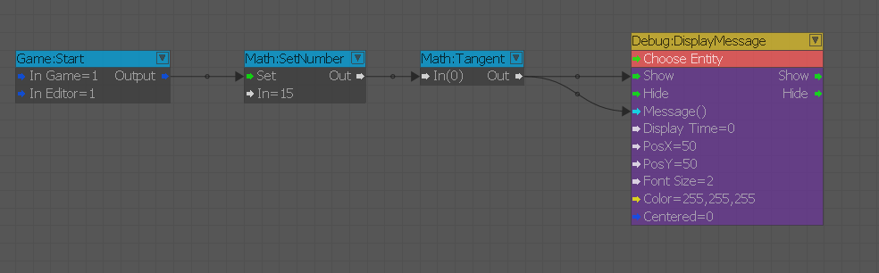
В приведенном выше примере мы установили входное значение (в градусах) на 15 через «Math:SetNumber», затем передали его через узел «Math:Tangent» и вывели результат в HUD.
(Ответ = 0,267949 радиан)
Ввод | Описание |
|---|---|
Плавать "в" | Входной угол в градусах, который будет рассчитан с помощью функции касательной. |
Выход | Описание |
Плавать "выход" | Выводит результат в радианах |
Математика:TangentInverse
Этот узел будет принимать входные данные в радианах и выводить результат в градусах.
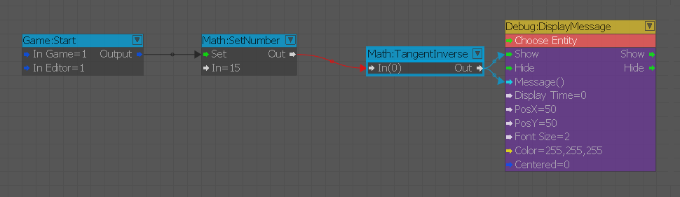
В приведенном выше примере мы установили ввод в радианах через «Math:SetNumber», и он проходит через «Math:TangentInverse» для вывода результата в градусах в HUD.
(Ответ = 15 градусов)
Ввод | Описание |
|---|---|
Плавать "в" | Входные данные в радианах, которые будут рассчитаны с помощью функции TangentInverse. |
Выход | Описание |
Плавать "выход" | Выводит результат в градусах |
Математика:UpDownCounter
Используется для вывода прямого или обратного счетчика.
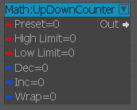
Входы
| Порт | Тип | Описание |
|---|---|---|
| Предустановка | Целое число | Предустановленное входное значение |
| Высокий предел | Целое число | Максимальный предел счетчика |
| Нижний предел | Целое число | Минимальный лимит счетчика |
| декабрь | логическое значение | Уменьшает счетчик |
| Инк | логическое значение | Увеличивает счетчик |
| обернуть | логическое значение | Если это правда, счетчик будет перенесен |
Выходы
| Порт | Тип | Описание |
|---|---|---|
| Выход | Плавать | Текущий счет |
Математика:Обернуть
Обертывает значение вокруг интервала, определенного Min и Max.